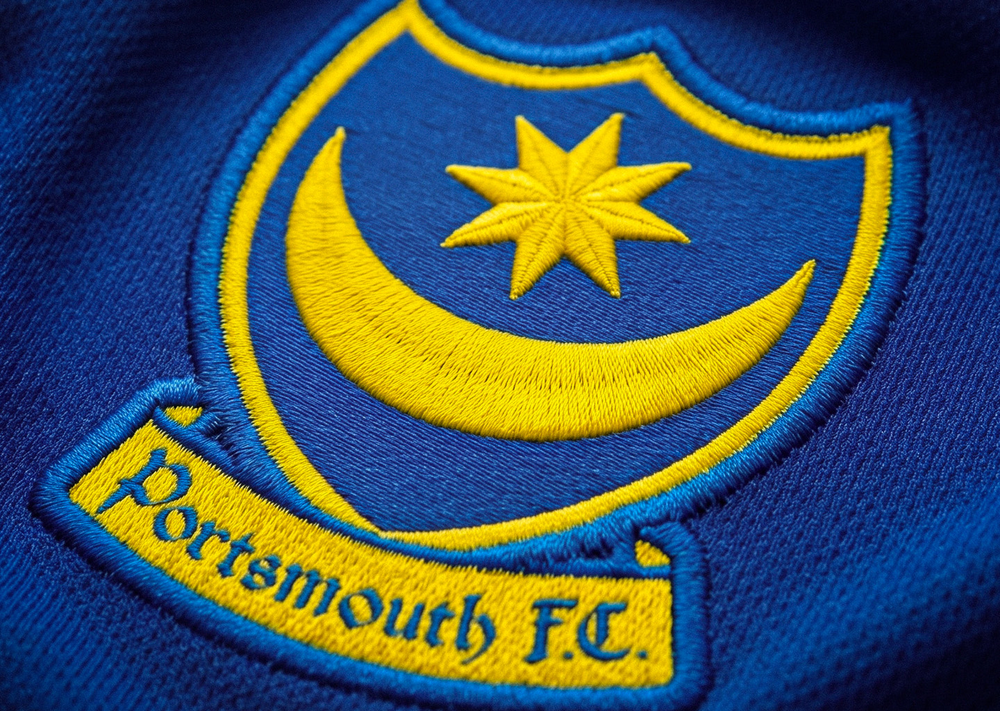
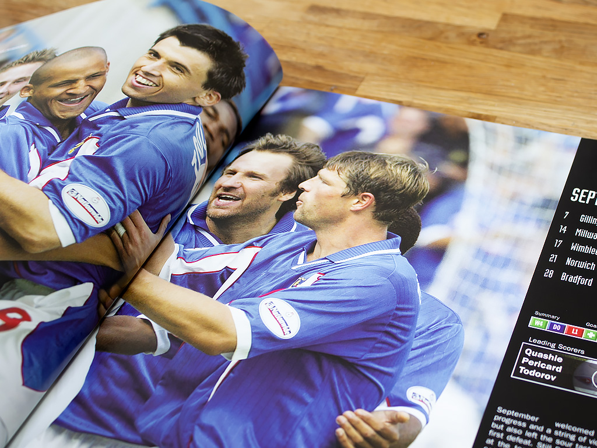
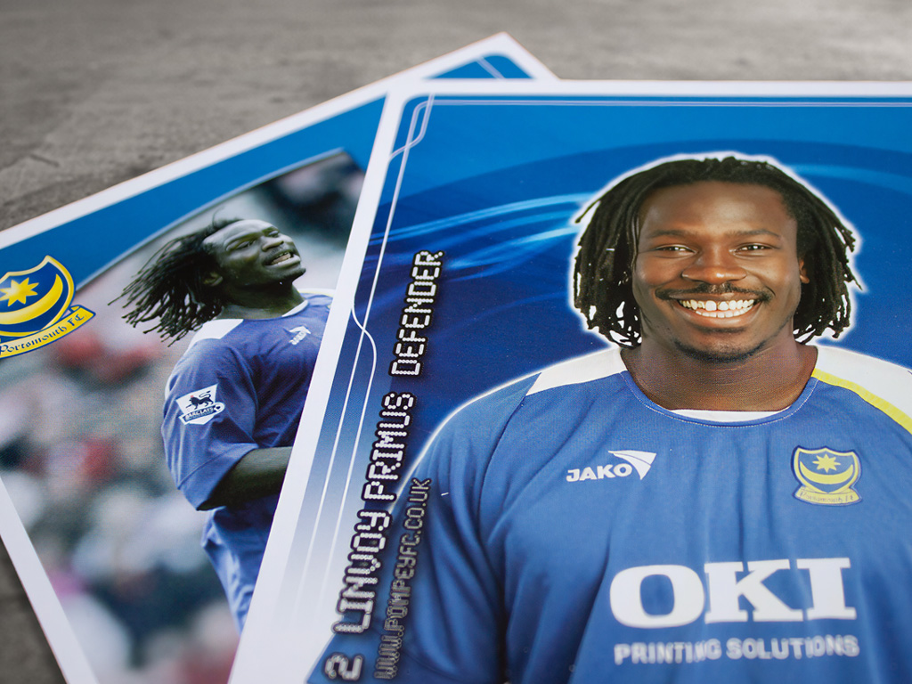
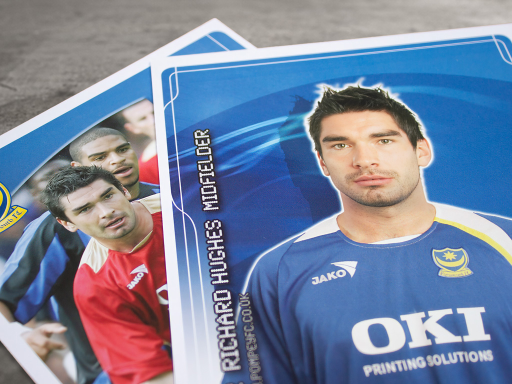
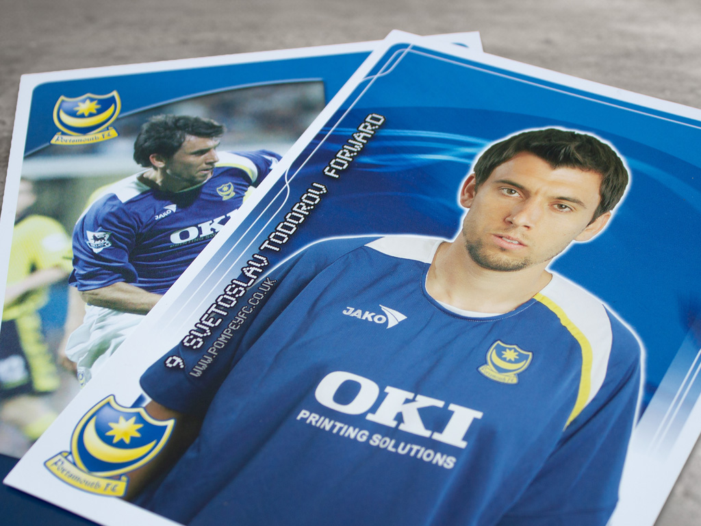
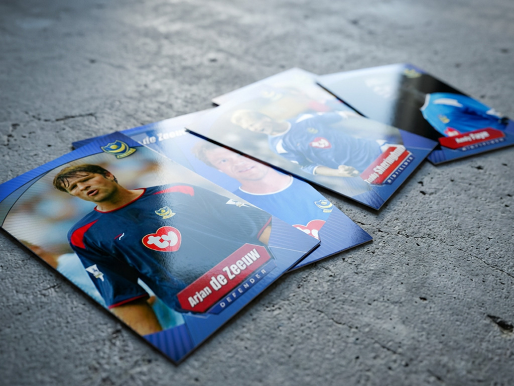
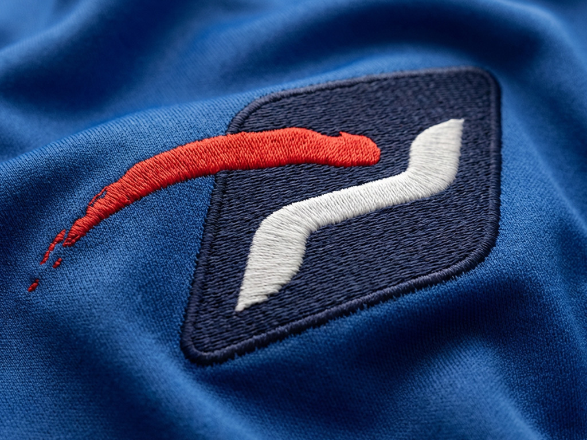
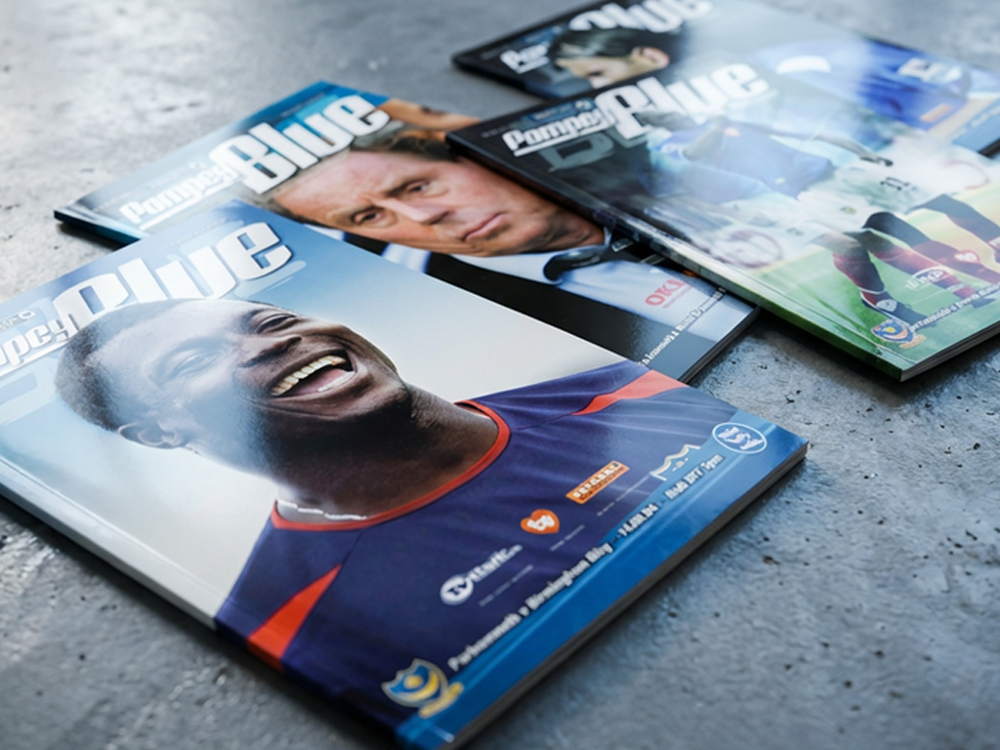
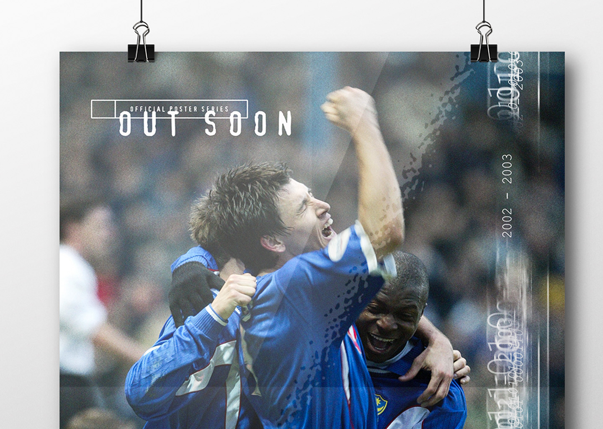

Case Study
"Probably the best job I've ever had"Keep your friends close and your enemies closer
Seizing the initiative after a major shake up at the top, I proposed to bring all design work in-house. Given the green light by the CEO, I set about putting everything in place.





After reaching out to all departments and employing a capable team of four, our little band did just about everything you can think of; point of sale, advertising, (award winning) matchday programmes, merchandise, event assets, large format graphics, posters, flyers, branding, webtv and much more. A very busy group working to tight deadlines and with limited budgets, we got it done. I can't think of a job before or since that I enjoyed more.


Five years of solid work, not without its ups and downs, but the journey was more than worth it. Looking back would I have done things differently, some of it, sure, the beauty of hindsight means I can use what I know now and see where things might have been better. All good things come to end, the club had new owners, new people, new ways of working, not the end I would have wanted but an end none the less.

Got a project in mind?